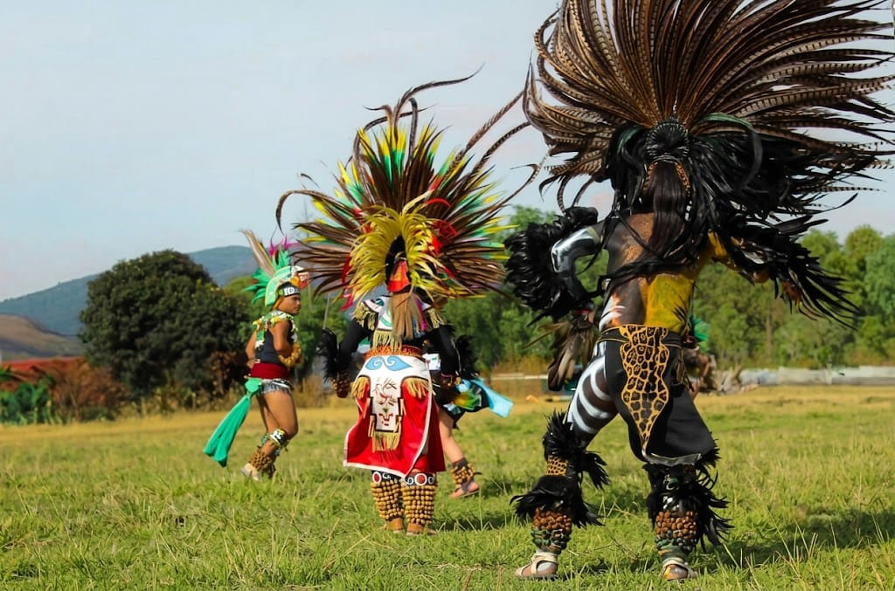
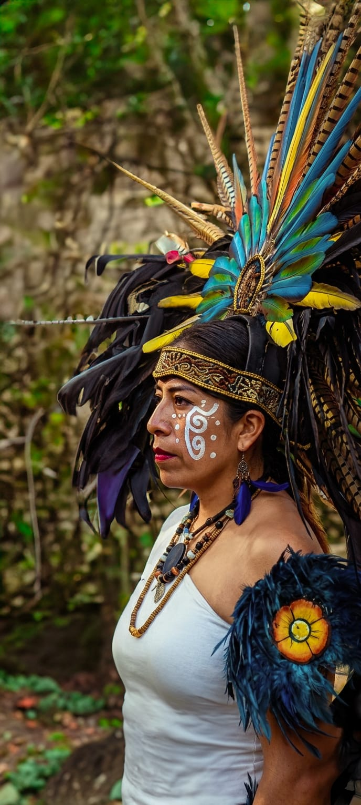

ContextoResumen + apoyo visual
Contenido basado en el informe analitico.
Imagen documental
Dos territorios - una red viva
Landing inicial para presentar el ecosistema formado por Memnosyne Institute, el Centro Cultural Tolteca de Teotihuacan AC y el Centro Comunitario U Kuuchil K Ch'ilbalo'on.
Presencia territorial
El inicio abre con imagenes de danza y memoria viva para que la primera lectura sea cultural, humana y territorial antes de entrar a las secciones de Fundacion, Tolteca, Maya, Proyectos y Donativo.


Distribucion recomendada
La pagina se organiza en cinco subpaginas para que cada tema tenga su propia narrativa visual, color dominante y contenido resumido.
Narrativa general, Memnosyne y sistema visual.
Teotihuacan, ceremonia, Tlashko y patrimonio.
Buen vivir, lengua, salud y memoria comunitaria.
Educacion, arte, salud, ambiente y alianzas.
Apoyo, transparencia y llamados a la accion.
Contenido basado en el informe analitico.
Texto de apoyo para revisar jerarquia, ritmo y lectura.
Dato contextual extraido del informe.
Dato contextual del informe.
Evidencia documental por integrar.
Desarrollo ampliado para explicar contexto, territorio, programa, publico beneficiado y evidencia visual sugerida.
Este bloque sirve para probar una version final con lectura continua, imagenes documentales y jerarquia editorial.